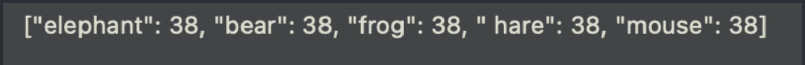

Урок 12. Циклы.
Задача 12.1 
Используйте цикл for in для вывода имени 10 раз. Для проверки содержится ли элемент в массиве, используйте метод contains().
Перед вами массив имен:
Вам нужно найти в этом массиве имя “Tim”, и вывести его на консоль 10 раз.

У вас обязательно должно быть создано свойство для хранения проверяемого имени. Мы его менять не планируем, поэтому оно является константой.
Проверяем хранится ли это значение в массиве при помощи метода contains, и если он возвращает true, то мы запускаем цикл, который отработает 10 раз. Таким образом мы 10 раз выведем на консоль "Tim".
Это решение самое оптимальное, но есть еще два варианта:
В первом варианте мы сперва делаем проверку, содержится ли элемент в массиве, и только потом запускаем цикл. И что бы наш цикл не был бесконечным, мы каждую итерацию уменьшаем counter на единицу. И как только counter станет больше нуля цикл остановится. Но если вам известен диапазон, то логичней использовать цикл for.
Во втором варианте мы запускаем цикл только при определенных условиях и это тоже отлично.
Давайте рассмотрим парочку не корректных решений:

Здесь метод contains используется к одному элементу массива, а это значит что компилятор будет проверять содержатся ли буквы Tim в строке name. А это значит что под это условие будет попадать все имена, которые начинаются на Tim, и если в массиве будет имя “Timy” то оно так же пройдет это условие. Поэтому здесь лучше использовать метод contains ко всему массиву.
Так же на консоли мы увидим всего одного Tim, что не соответсвует заданию, потому что метод contains только на одно свойство вернет true, на все остальные false.
Давайте еще одно рассмотрим решение:
Нет ничего плохого в цикле, внутри другого цикла, но только если это обосновано. В данном случае это нагружает систему, цикл это достаточно трудоемкий процесс, и если можно сделать меньше циклов, то лучше этим воспользоваться. Здесь можно снизить немного нагрузку и после внутреннего цикла установить ключевое слово brake, что бы выйти из внешнего цикла, и не делать перебор всей коллекции.
В данном случае, если компилятор натыкается на значение которое есть в массиве, то он запустит внутренний цикл, и после того как внутренний цикл отработает, компилятор пойдет дальше, наткнется на оператор break и мы остановим внешний цикл, таким образом мы не будем перебирать всю коллекцию, если уже нашли нужный нам результат.
И вот еще одно решение:
Здесь нет смысла использовать цикл repeat, цикл while с этой задачей справится лучше, этот цикл нужно использовать если вам необходимо обязательно выполнить хотя бы одну итерацию, а это очень редкий случай. И так как мы знаем что у нас должно быть именно 10 итераций, то сподручней использовать цикл for.
И еще одно не совсем оптимальное решение:
Как уже было сказано выше цикл достаточно трудоемкий процесс, и лучше сперва проверить содержится ли элемент в массиве и только потом запускать цикл, в этом же случае цикл будет крутить 10 раз не зависимо от того есть элемент в массиве или нет.
Еще одно решение, которое я бы тоже хотела затронуть:
Обратите внимание что ветка else здесь абсолютно лишняя. Если не будет выполнено первое условие, то компилятор и без того пойдет на новую итерацию, если убрать ветку else ничего не изменится.
Так же посмотрите что мы интерполируем в функцию print - имя name, которое и без того является строкой, поэтому здесь можно было избежать интерполяции, а просто передать name: print(name)
И последнее не оптимальное решение:
Здесь слишком много лишних действий. Давайте проследим пару итераций.
Запускается первая итерация внешнего цикла, мы запускаем еще один цикл, в котором перебираем массив, пока не закончится этот перебор, второй итерации внешнего цикла не будет. То есть мы запускаем внутренний цикл 10 раз. Что бы вывести на консоль 10 элементов, внутренний цикл сделает 30 итераций (Это если в массиве три элемента). Вы в этом можете убедится, поместив print(“Hi”) в конец внутреннего цикла:
Обратите внимание сколько раз вы увидите приветствие “Hi”.
Задача 12.2
Для решения этого задания используйте цикл for in для перебора массива products, далее вспомните как создать новую пару в словаре.
Вы ведете учет товаров в своем игрушечном магазине, и вам нужно внести их в базу, в качестве базы у вас будет пустой словарь. В качестве начальное значения будет два массива, один с наименованием товаров, а второй с количеством этих товаров. Наполните пустой словарь данными.
Перебираем коллекицю products и на основе каждого элемента создаем новую пару, где в качестве ключа выступает product, а в качесте значения элемент из массива quantityOfproducts. что бы достать один элемент нам нужен индекс, поэтому мы создаем еще одно свойство count, которое будет считать итерации.
Давайте разберем еще способы с использованием методов, которые мы не проходили, но они так же часто используются в разработке:
Есть такой замечательный метод zip, который позволяет перебирать сразу две коллекции, в круглые скобки после zip мы передаем сразу две коллекции, а после ключевого слова for нам доступны в кортеже по одному элементу из этих коллекций. Мы последовательно берем каждый элемент из коллекций и используем их для создание новой пары с ключем product и значением quantity.
Можете почитать о нем в документации zip
Есть еще одна отличная реализация:
метод enumerated() при переборе коллекции при помощи цикла for in возвращает индекс и элемент коллекции. Таким образом после ключевого слова for нам доступен кортеж с двумя элементами, индексом элемента коллекции, и самим элементом.
Есть еще один интересный вариант решения:
Здесь мы перебираем полузакрытый диапазон от 0 до количества элементов в массиве. Диапазон должен быть обязательно полузакрытым, потому что индексы в массиве идут от нуля, а свойство count возвращает фактическое количество элементов в массиве, если использовать открытый диапазон то вы рискуете выйти за пределы массива, и обратиться к несуществующему индексу.
Правильно диапазон в цикле for in делать зависимым от внешних данных. Старайтесь не хардкодить значения из головы. В нашем случае диапазон зависит от количества элементов в массиве, изменится массив, изменится и цикл.

Думаю здесь описывать происходящее нет необходимости, потому что о методе updateValue мы уже разговаривали на уроке.
Конечно есть еще методы решения этой задачи, но мы с вами разобрали самые распространенные.
Теперь давайте взглянем на не рабочие варианты:
Здесь мы берем первый элемент из коллекции products, и на основе этого элемента создаем словарь с ключами из массива quantityOfproducts и одинаковым значением, так как пока не закончит перебор внутренний цикл, внешний не запустит следующую итерацию. Итого мы получим следующий результат:
Почему будет только одно значение 38, потому что вторая итерация внешнего цикла закончится неудачей. потому что мы снова запустим внутренний цикл, который попытается добавить в наш уже наполненный словарь данные с теми же ключами, а мы с вами знаем что в словаре все ключи уникальные.
Следующий вариант так же не будет работать, по той же причине:
Вот еще одно не оптимальное решение:
Если у вас встанет задача наполнить словарь на основе массивов, которые в себе содержать 100 и более элементов, это будет достаточно сложная для вас задача. Такое решение не гибкое и вы будете каждый раз к нему возвращаться, если надо добавить элемент в словарь. Решение должно быть универсальным.